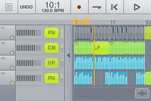

studio.M is the multitrack music creation app for songwriters, producers and musicians on the go. Based on the top-selling studio.HD app, it offers 4 audio tracks, mono or stereo (upgradeable to 8) with recording, editing, an extensive loop library plus automated mixing and effects all controlled by a fast and creative touch interface. Get ideas down fast and work with them anywhere!
Grab a beat and throw down a rap, capture the spark of a song before it’s gone or produce dance tracks on the go. It’s even great for making custom soundtracks for your next YouTube movie!
FEATURES:
MULTITRACK TO GO
studio.M gives you up to 4 tracks (stereo or mono) of playback, upgradeable to 8 tracks (via in-app studio.MX edition upgrade). Choose a drum loop, play a guitar part, add some overdubs and layer-on the textures. More cowbell!AUTOMATIC TEMPO MATCHING
Want to use loops at different tempos than your song? Need to speed-up the tempo to dial in that perfect groove? studio.M automatically conforms audio BPM to the Projects tempo.BROWSE AND AUDITION LOOPS
Loop Sets logically group instrument parts (drums, bass, guitars, keys, etc.) that work well together. Audition loops at current Project tempo playing with the current arrangement.INCLUDES GREAT SOUNDING LOOP CONSTRUCTION KITS
Get access to over 100 loops as remixable Loop Sets spanning Trance, Hip-Hop, Breakbeat, Drum ’n’ Bass, Minimal, Progressive House, Reggaeton, Industrial, Rock, Pop, Funk and Country styles. Upgrade in-app to the studio.MX version and get access to another 130 loops.IN-APP LOOP STORE
Hit a creative wall? Buy some new loops and get the juices flowing or grab one of the free sets on the store. Loops available from major 3rd party plus smaller boutique dance producers!RECORD YOUR BEST … then make it better!
Hit Record, listen to the count-off and jam! Use Loop Record to lay down a few takes and choose your best or edit together a hybrid. Touching the track multiple times switches between Record, Play or Mute mode.ARRANGE YOUR SONG WITH YOUR BARE HANDS!
Grab your audio parts and Edit away! A fast, touch interface makes it all easier.EFFORTLESSLY ZOOM AROUND YOUR MUSIC
Zoom in and out of your arrangement quickly. studio.M even “Auto-Zooms” the whole composition in view with a double-touch.EDIT FASTER
All operations intelligently snap to Bar/Beat based on Zoom level. The LOOP CONTROL BAR lets you change the region you want to loop PLUS lets you Cut/Copy/Paste whole verses/choruses. LOOP/repeat a part to play it longer. SPLIT feature lets you cut longer files into smaller pieces. CROP feature lets you make your current edit into a new, truncated, loopable file. Plus 10 levels of Undo!AUTOMATED MIXING WITH AND REAL TIME EFFECTS!
Each track has volume control and can be assigned up to 4 effects with automation. studio.M includes, Compression, Pan, Low/Hi Pass Filter and Reverb. Buy the MX upgrade to add Delay, Flanger, Gate, Stutter, BitCrusher and Glitchy Repeater! An X-Y touch pad controls the effects and faders control volumes.FILE MANAGEMENT FEATURES
New recordings associated with your project can be seen in the Arrange view. Delete recordings by simply dragging them off the timeline. Mistakes? Just hit “Undo”. Archive recordings, Projects, mixdowns and user-created custom loops to the computer.IMPORT AND ORGANIZE YOUR OWN LOOPS
Import your 44.1/16 bit WAV files via iTunes Shared Documents. Edit recordings and add them to “My Loop” sets for reuse across multiple Songs/Projects.EXPORT A MIX TO YOUR COMPUTER!
Create a 16/44 WAV mix and save it to your Mac/PC via iTunes. Wow your friends with a mix of your latest song!AUDIO COPY/PASTE FROM GRUVTRON AND OTHER APPS
Record a cool synth performance in Gruvtron or other ACP-compatible apps and paste it into studio.M as an audio file.For more info – http://www.soundtrends.com/apps/studiom/
Grab studio.M now – 


{kind=link}
{kind=link}